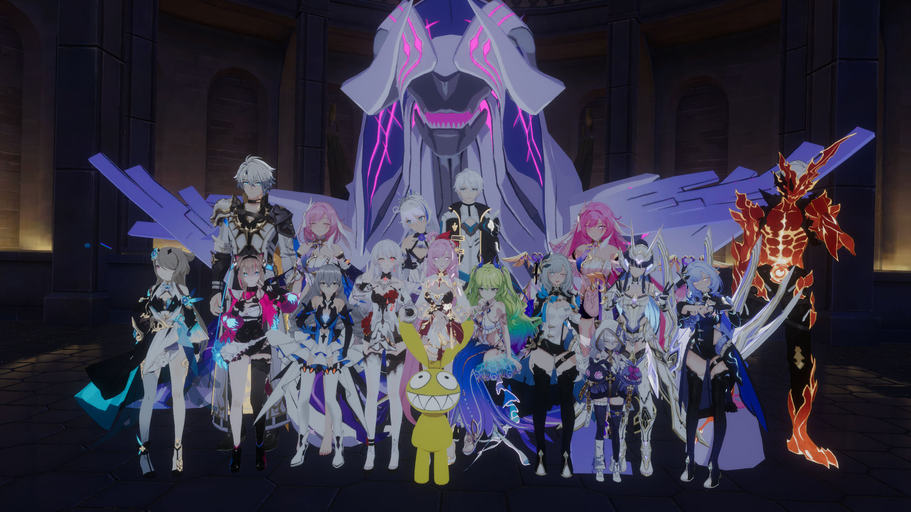
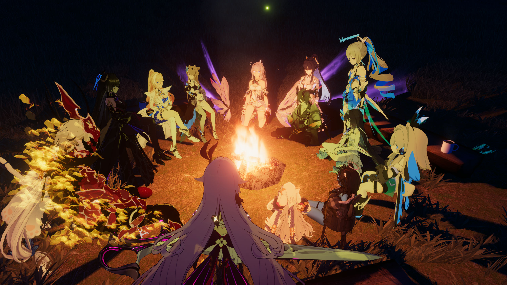
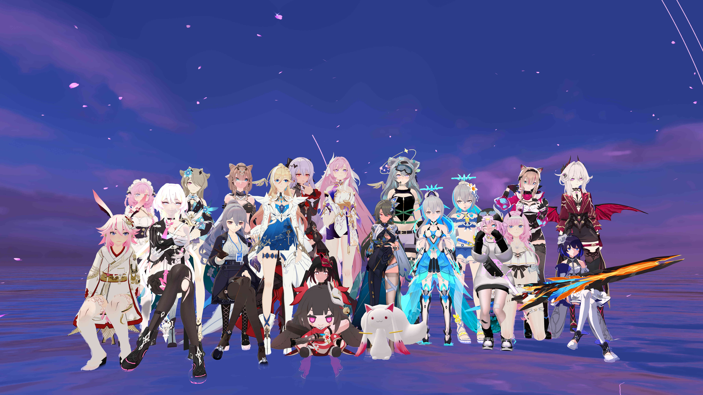

往世乐土
群组简介
（该群组主要面向VRCHAT以及喜欢崩坏三游戏玩家，加入我们，一起愉快的玩耍吧~）
在这幽邃的地下，第一文明纪元最后十三位融合战士的记忆被封存于此。如今，这里又迎来一位新的访客。
＂欢迎高洁而纯真的灵魂＂
＂嗨~你好，欢迎你加入往世乐土，亲爱的访客～＂
群组活动照片
  嘎嘎采访环节🎤
| Q：今天我们要来采访的是往世乐土的多个伙伴！首先是第一位！Crydéra ！欢迎欢迎！跟大家打声招呼吧！ |
|---|
| A：你好你好！ |
| Q：你们群组居然是轮流回答问题的形式呢！看来群组的人心很齐啊~ |
| Q：那我就来第一个问题！ |
| Q：简介里说‘欢迎高洁而纯真的灵魂’，那建立这个群组的初衷，是为了给崩坏三玩家提供一个‘避难所’，还是为了给VRChat玩家提供一个‘安利崩坏三的传教所’？在这里，是先交‘乐土门票’（崩坏三启动！），还是先交‘VRChat入场券’？” |
| A：是要是vrc玩家都可以加入， 不管是喜欢角色还是喜欢这个游戏本身，进来的话大家都可以一起玩，哪怕你说，不喜欢这个，呃不是，是并不玩这个游戏，或者你只是对这个角色感兴趣，你也可以进来和大家一起交流 |
| Q：看来是一个很开明的群组呢！那有请一下位选手~凌宇不会淋雨~ |
Q：群组里十三位融合战士都有对应的玩家存在吗?
A：融合战士十三位，是有的，但是呢每个人喜欢的角色不同所以可能是凑不齐，因为大家平常都有点忙，可能，你就是说，五百多个人还是能凑的出来的，但是呢，因为这样啊，那样的问题，上学上班啊，生活问题啊，上线时间不一样，所以可能凑不齐这十三个人
Q：嘎嘎！期待十三位融合战士重新聚集的时候！
Q：啊，我们再次来到下一位选手啊~慈父 chat ！
| Q：平日里，融合战士们都要做些什么活动？ |
|---|
| A：这些什么活动，平时都是他（十年岁月无）组织的 ，因为我们都是一块玩的，就像现在这种情况（活动进行中），都是一堆人过来玩，就不存在什么机会啥之类的，都是一个群组人过来玩 |
| Q：嘎嘎！看起来没有什么框框架架，是一个让人感到很自在的社团的呢！ |
| Q：这就要到了最后一个环节了，遇到了许多形形色色，非常有趣的融合战士，要说再见还有真有点舍不得呢！ |
| Q：那么，接下来登场的是~凯文·卡斯兰娜！ |
Q：如果要对来到往世乐土新访客们说一句霸气十足的话，你会说些什么呢？
A：鸟为什么会飞？
Q：嘎？真是一句让人摸不清头脑的话，也许是某种秘密口令？
Q：今天非常感谢往世乐土的各位接受轻音会社的采访，期待下一次你们的活动！
A：（齐）感谢，轻音会社的邀请，很高兴给大家分享我们群组的事情。
嘎嘎评语
嘎嘎对崩坏三游戏不太熟悉，但不影响我对这个社团的感觉😉，里面的人个个都是人才，说话又好听😁，时不时会搞点抽象？群组非常的活跃，我觉得如果你喜欢崩坏系列游戏，应该会很有话题，当然，就如前面采访谈到的，就算不喜欢玩崩坏系列的游戏，这个群组也是一个聊天交友的好去处🤝，这个群组的头头给我一种很负责的感觉，能看出来他是在用心经营群组嘎，而且群组莫名有种归属感，我想要是加入的话应该很快就能打成一片吧！🤣
鸟为什么会飞到底是什么啊？
宣传海报